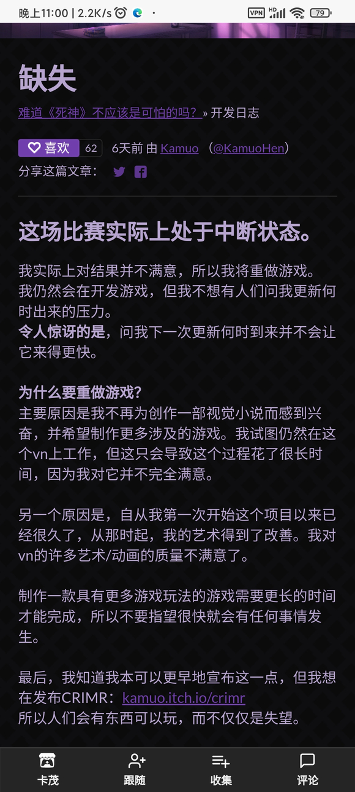

8月23日kamuo在他的忒忑和itch上发布关于死神哪有这么萌的制作变动通知，镇楼图为通知内容 - - - - - - - - - - - - - -
通知传送网页链接 ，此次通知通告了作者关于第二部制作规划的不满，第二部确定重做，大概率将不使用视觉小说的形式，更新日期将极大幅度延长，我们拭目以待，以下为镇楼图网页翻译，吧友可回复讨论 
本贴是2022.8.26版
历史版（累计有阅读数：0、点赞数：0、回复数：0）：